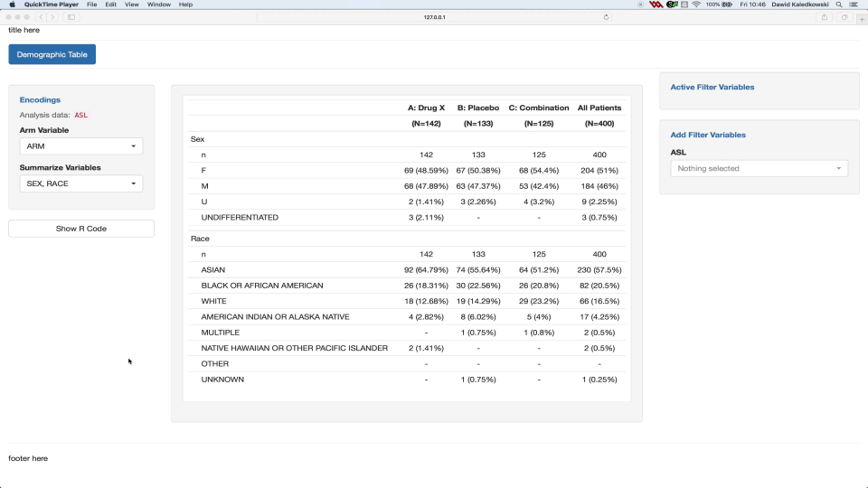

Reproducibility
NEST coreDev
2022-04-22
teal-code.RmdReproducibility is an important feature when it comes to data analysis for the following reasons:
- Enables users to reproduce the outputs at any moment in a simple R console outside of a reactive shiny app.
- Provides transparency where it helps users and others understand what happened during the analysis.
This is where the chunks concept of
theteal.code package comes into play. It provides a
mechanism to develop reproducible shiny/teal modules. The
teal package complements the chunks concept by providing a
server and an interface to retrieve the reproducible code via a
Show R code button.
Note that there is a public shinymeta R
package from RStudio that offers similar functionality.
However, currently, shinymeta can not be easily integrated
into teal modules and hence we recommend using
chunks for teal based apps.
Reproducibility in teal
Teal applications can be designed and set up such that for every output displayed, the associated R code can be requested via the Show R code button. In order to develop a teal application with reproducible outputs the app developer needs to take this into account when implementing the app.
The reproducible code displayed for outputs in teal is
always made from three parts:
- Header which includes information such as:
- directory path
- server name
- R version
- date
libPaths()- packages’ versions.
- Preprocessing Code: refers to the code which precedes the teal app initialization, this includes:
- Data imports
- Data transformation
- Checking data reproducibility
- Teal Module Analysis Code which includes:
- Data merging (optional)
- Filtering and encodings
- Data analysis/visualization

The header is created by teal, the preprocessing code
must be supplied by the app developer and the analysis code is provided
by the teal modules.
Chunks
The code chunks were introduced to allow the development of
reproducible shiny/teal modules. A
reproducible module includes a “Show R Code” button which can display
the code needed to reproduce the outputs of the module. Inside the
modal, which pops up after clicking the button, you should see:
- The code loading the necessary libraries - by
teal::get_code - The code used for loading and filtering data sets - by
teal::FilteredData - The code used for merging multiple data sets - by
teal.transform::data_merge_srv - The code generating the outputs - by code chunks
The code chunks were especially designed for the code leading from an
input data set to the outputs. To get more information about the concept
of chunks, please refer to article basic chunks.